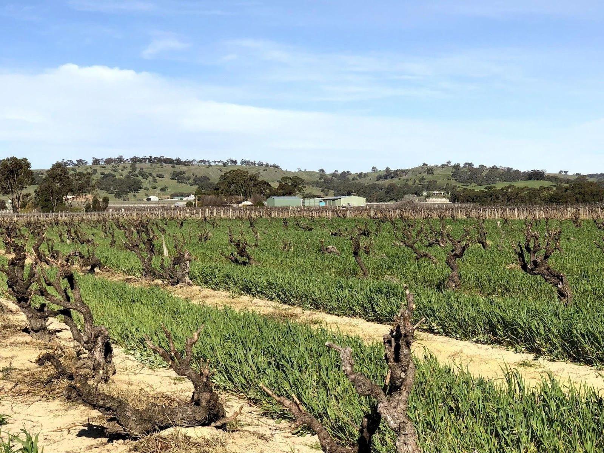

Sin Titulo

Everything gets weird when autumn hits your doorstep. It seems that the weather can’t decide what role to play. Should it be chilly, or should it be hot? Oh, rain is also an option, right? Luckily, there is a remedy - almost red wines. They can be rosé, or they can be light-to-medium red. Oh, something in-between is also an option, right?
Right! So this is our plan for the evening.
- Anne et J.F. Ganevat La Bubulle à Jeannot
- Villa Calicantus Chiar’otto Bardolino Classico Chiaretto 2019
- Matassa Tattouine Rouge 2020
- Victoria E. Torres Pecis Sin Titulo NG 2017
- An Approach To Relaxation Sucette 2018
- Cà del Vént Anima Brut Rosé Pas Operé VSQ 2014
- Alex Craighead Kindeli Verano 2020
- Jauma Audrey’s Fairygarten 2018
Ordering wines is one of the most challenging problems I face when planning a wine tasting event. It’s also a controversial topic because everyone has their own opinion. I bet some of you would, for example, put Sucette at the end of this list and Jauma at the beginning. But aside from body and volume, I need to consider one critical aspect of these events. Most of the participants are casuals (in a good sense). And while we can drink and enjoy eight wines, our perception becomes dulled by the end. So from my experience, the most complex wines should be in the middle. Body and alcohol levels matter, but I am ready to experiment to deliver the maximum out of these wines.
So the story here is simple. We start with non-complex wines while we enjoy our food. Then with Matassa, we build the road to more complex and intriguing wines. I expected Cà del Vént to be a crescendo of this tasting that also resets us and lets us lay low to finish on light and easy stuff.
Did it work? I think, yes. The first two wines played well with food. Not too complex, yet pleasant. Then we enjoyed more sophisticated wines with Anima Brut being the pinnacle of the evening. Some would say that the last two were redundant, but hey - there are people who enjoyed them more than previous wines.
That being said, I am going to continue with this kind of order, where the most complex and interesting wines are located in the middle.
Scores
| Wine #1 | Wine #2 | Wine #3 | Wine #4 | Wine #5 | Wine #6 | Wine #7 | Wine #8 | |
|---|---|---|---|---|---|---|---|---|
| Oleksandr R | 3.00 | 2.80 | 3.80 | 4.00 | 3.00 | 4.20 | 4.00 | 3.50 |
| Andrii S | 3.60 | 3.40 | 3.90 | 3.70 | 3.30 | 4.40 | 3.90 | 4.00 |
| Tania S | 4.00 | 3.00 | 3.30 | 2.70 | 3.40 | 4.00 | 3.80 | 4.40 |
| Dmytro S | 3.90 | 3.60 | 4.10 | 3.20 | 3.10 | 4.00 | 4.30 | 3.90 |
| Ivietta K | 4.00 | 3.80 | 4.30 | 4.20 | 4.80 | 3.80 | 4.40 | 3.90 |
| Dmytro D | 4.00 | 3.50 | 3.80 | 4.30 | 4.50 | 3.90 | 3.00 | 3.40 |
| Maksym K | 2.90 | 3.00 | 3.10 | 2.80 | 3.50 | 4.10 | - | - |
| Elivra K | 4.00 | 3.80 | 4.00 | 3.80 | 3.70 | 4.30 | 3.60 | 3.70 |
| Oleksandr Y | 3.80 | 4.00 | 4.10 | 3.50 | 3.40 | 4.20 | 3.90 | 4.10 |
| Olena H | 3.90 | 3.80 | 3.80 | 3.70 | 3.80 | 4.00 | 4.00 | 3.60 |
| Kateryna K | 4.00 | 3.20 | 4.00 | 3.80 | 4.30 | 4.70 | 3.20 | 4.00 |
| Boris B | 3.80 | 3.70 | 4.00 | 4.20 | 4.50 | 4.20 | 3.80 | 3.70 |
| amean | sdev | favourite | outcast | price | QPR | |
|---|---|---|---|---|---|---|
| Wine #1 | 3.74 | 0.1391 | 0.00 | 0.00 | 955.00 | 1.7159 |
| Wine #2 | 3.47 | 0.1372 | 0.00 | 3.00 | 702.00 | 1.5822 |
| Wine #3 | 3.85 | 0.1058 | 2.00 | 0.00 | 955.00 | 2.0100 |
| Wine #4 | 3.66 | 0.2541 | 1.00 | 3.00 | 997.00 | 1.4581 |
| Wine #5 | 3.77 | 0.3352 | 2.00 | 2.00 | 1529.00 | 1.1249 |
| Wine #6 | 4.15 | 0.0542 | 5.00 | 0.00 | 1477.00 | 2.0418 |
| Wine #7 | 3.81 | 0.1590 | 1.00 | 2.00 | 802.00 | 2.2539 |
| Wine #8 | 3.84 | 0.0769 | 1.00 | 2.00 | 787.00 | 2.3906 |
How to read this table:
ameanis arithmetic mean (and not ‘amen’), calculated as sum of all scores divided by count of scores for particular wine. It is more useful thantotal, because on some events some wines are not tasted by all participants.sdevis standard deviation. The bigger this value the more controversial the wine is, meaning that people have different opinions on this one.favouriteis amount of people who marked this wine as favourite of the event.outcastis amount of people who marked this wine as outcast of the event.priceis wine price in UAH.QPRis quality price ratio, calculated in as100 * factorial(rms)/price. The reason behind this totally unprofessional formula is simple. At some point you have to pay more and more to get a little fraction of satisfaction. Factorial used in this formula rewards scores close to the upper bound 120 times more than scores close to the lower bound.
Anne et J.F. Ganevat La Bubulle à Jeannot NV

- producer: Anne et J.F. Ganevat
- name: La Bubulle à Jeannot
- vintage: NV
- grapes: Gamay, Poulsard
- appellation: Vin de Table
- location: Jura, France
- alcohol: 12.0
- sugar: 1.0
- price: 955 UAH
- importer: Wine Bureau
A rosé Pétillant Naturel by Jean-François Ganevat, a rock-star naturalist from Jura. But don’t be mistaken. This particular wine is not made uniquely from Jura grapes. Together with his sister Anne (hence Anne et J.F. Ganevat), they source grapes from Alsace, Beaujolais, and Savoie. This decision was made after consecutive vintages of losing large portions of the harvest. Anne and Jean-François even went so far as to purchase vines in the Beaujolais. Each Vin de France cuvée is a blend of estate fruit from the Jura and purchased (or estate) fruit from another region. In the case of La Bubulle à Jeannot, Poulsard comes from Jura and Gamay - from Beaujolais.
Villa Calicantus Chiar’otto Bardolino Classico Chiaretto 2019
- producer: Villa Calicantus
- name: Chiar’otto Bardolino Classico Chiaretto
- vintage: 2019
- grapes: Corvina, Rondinella, Molinara, Sangiovese
- appellation: Bardolino DOC
- location: Bardolino, Veneto, Italy
- alcohol: 12.0
- sugar: ???
- price: 702 UAH
- importer: Roots
Chiar’otto is a wordplay and a tribute to Daniele’s nuclear family. Chiaretto (meaning “pale” in Italian) is the name used for rosé wines produced near the shores of Lake Garda. Chiara is Daniele’s wife. And “otto” is the Italian word for the number 8, which is the number of the month in which Anna, the daughter of Chiara and Daniele, was born.
Made of traditional grapes of the Bardolino region from 54 years old vines. 9001 bottles produced.
In case you are not familiar with the story behind Villa Calicantus, take some time and read it.
Matassa Tattouine Rouge 2020
- producer: Matassa
- name: Tattouine Rouge
- vintage: 2020
- grapes: Grenache Gris, Carignan
- appellation: Vin de Table
- location: Languedoc-Roussillon, France
- alcohol: 10.0
- sugar: 0.5
- price: 955 UAH
- importer: Wine Bureau
Tattouine Rouge? A deserted moon-like sphere on a label? If the corners of your lips are not dancing, you might be living under a rock. My congratulations, Patrick! On the other hand, Louis/Dressner says the name comes from a single vineyard of red schist soils named Tattouine (and not Tatooine, by the way).
In any case, it’s a light and delicate blend of Grenache Gris and Carignan made in Matassa style. I have already shared the story of Matassa, so not going to repeat it here. But in case you are curious, CLICK HERE to find out more.
Victoria E. Torres Pecis Sin Titulo NG 2017
- producer: Victoria E. Torres Pecis
- name: Sin Titulo NG
- vintage: 2017
- grapes: Negramoll
- appellation: La Palma DO
- location: La Palma, Canary Islands, Spain
- alcohol: 13.5
- sugar: ???
- price: 997 UAH
- importer: Roots
Yes, this wine comes from the Canary Islands, specifically from the most north-westerly island - La Palma, La isla bonita as they call it. I know, it’s crazy. Western Sahara is on the same latitude! The soils are volcanic and covered with picón, the dark ashy sand. The terrain is rugged. Climatic conditions are extreme. Vineyards are constantly whipped by Atlantic winds. Yet, people grow vines here and even manage to produce wines. There are 18 winemakers on the island, but Victoria Torres Pecis is the only one exported outside Spain.
I am like the Listán Blanco. Very resistant.
Victoria Torres Pecis is the sole owner and caretaker of her family’s centenarian winery in Fuencaliente. Her father died in 2014. And since then, she has been working alone against the elements and harsh conditions of the island. Victoria learned the winemaking craft by watching her father use an old lagar (dating from 1885) to press grapes and vinify them in chestnut barrels. And not much has changed in the winery over time. It is small, with few stainless steel tanks, old American and French oak, and chestnut barrels. Only native yeasts and no temperature control.
In total, Victoria works on 4.7 hectares: 2 of them are her property, and the rest she rents. She also purchases the grapes from the farmers she works closely with. And all these vineyards are scattered around the island - from the southern tip to the west side of Roque de Los Muchachos. That also means that the altitude varies - some are at 1500 m above sea level. All vines are ungrafted (as mentioned on the labels) because phylloxera never reached The Canaries. And she works with quite old vines - some are older than 130 years!
Victoria makes a “Sin Titulo” (without a name) bottling every vintage, but the wine is always a one-off. For example, in 2016 Sin Titulo was an oxidative white, but in 2017 it is a red made from Negramoll. The idea is to blend grapes from the first plot harvested (August in 2017) and then from the last plot picked (October/November). It turns out, that it takes around 3 months to harvest all the plots around the island - the weather and elevation allow it. The first goes into an oak barrel and the second into stainless steel. Both see nine months on lees, where they pick up some colour and texture.
2017 is a vintage of very low yields. Mostly because of hail. So only 1200 bottles were produced.
An Approach To Relaxation Sucette 2018
- producer: An Approach To Relaxation
- name: Sucette
- vintage: 2018
- grapes: Grenache
- location: Vine Vale, Barossa Valley, South Australia, Australia
- alcohol: 14.5
- sugar: 0.55
- price: 1529 UAH
- importer: Wine Bureau
Carla & Richard Rza Betts are Americans living in Amsterdam and making wine in Barossa Valley, Australia. They travel a lot (like 250 days a year), so it makes sense to have Amsterdam as a home (or a base). But why Australia? Because they own one of the oldest Grenache vineyards on the planet. The Rza Block is in the heart of the sandy Vine Vale region in the eastern part of Barossa Valley in South Australia. The vineyard was planted somewhere between 1860 - 1880.
The respectable age of the vines is not the only curious fact about Rza Block. While the rest of Barossa tends to have heavier red clay soils, Vine Vale is quite different as it has a significant deposit of fine sandy soil. The sand comes from the weathered granite and quartzite of the Barossa Ranges and Eden Valley. It gets to Vine Vale via the gullies that drain out of the hills down towards the Valley floor. The sand doesn’t give much to the colour. But it contributes high-toned aromatics to the wine. Arguably, it’s more important.

And there’s more! The same gullies also bring wind, which is as important as the sand, because they create a big diurnal shift, cooling the vineyards at night, and preserving acidity and freshness. To illustrate: it can be 38C on a summer day. But because of the wind, it can be as low as 10C in the evening.
Sucette is 100% Grenache, with the majority of fruits coming from Rza Block. The small percentage of remaining grapes comes from a highly aromatic 90-year-old vineyard a few blocks away from Rza Block.
Cà del Vént Anima Brut Rosé Pas Operé VSQ 2014
- producer: Cà del Vént
- name: Anima Brut Rosé Pas Operé VSQ
- vintage: 2014
- grapes: Pinot Noir
- location: Lombardia, Italy
- alcohol: 13.0
- sugar: 1.6
- price: 1477 UAH
- importer: Wine Bureau
Cà del Vént has a humble story that officially started in 1994. With no equipment, just in the garage, they handcrafted 5 barrels of Clavis, red wine from autochthonous varieties. It was made just for personal consumption. As they admitted, likely due more to luck than actual ability, their first wine, Clavis 1996, turned out to be incredible.
Only in 2001 did they buy a small pneumatic press to vinify the first 2000 bottles of Franciacorta. Yet they didn’t like the result as the wine lacked elegance and the oak flavours were too obvious and heavy.
After gaining experience, the property reaches 6.5 hectares merging some neighbouring vineyards. And so they move from an amateur to a small winery.
As you might know, to be allowed to write any designation like Franciacorta DOCG, you have to pass an evaluation by the tasting commission. In 2015 Cà del Vént was rejected because its wines did not suit the appellation standards. Formally commission said that these wines are too rich and complex. Since then Cà del Vént is not bound by any restrictions other than its own. High standards, and a strong identity made by the soil and the season.
The base wine for this rosé spent 7 months in French oak 225 litres Taransaud barriques. The second fermentation started with the addition of grape sugar. Overall, it spent 45 months on lees. After the disgorgement, sparkling VSQ is filled ONLY with wine from other bottles belonging to the same lot, without adding sugar or any liqueur d’expedition. This is what Cà del Vént means by Pas Operé (unprocessed). Not to confuse with Pas dosé - no added sugar.
As far as I understand, the label depicts cracks on the granite block. They occur by the procedures used to quarry the stone.
Alex Craighead Kindeli Verano 2020

- producer: Alex Craighead
- name: Kindeli Verano
- vintage: 2020
- grapes: Riesling, Syrah, Sauvignon Blanc, Chardonnay, Gewürztraminer, Pinot Grigio, Pinot Noir
- location: Nelson, New Zealand
- alcohol: 13.0
- sugar: 1.0
- price: 802 UAH
- importer: Wine Bureau
Kindeli wines are the product of Alex Craighead and Josefina Venturino. Alex, born in Australia and raised in New Zealand, studied wine and soon after began to travel the world to gain experience from other winemakers in various regions. That’s how he met Josefina, a landscape architect from Argentina. Eventually, they moved to New Zealand.
From day zero, they were experimenting with low intervention winemaking. In 2014 they released their first wines in Martinborough. In 2016 they moved to Nelson, where they bought an existing organic winery and vineyard. In other words, they moved from the southern part of the Northern Island to the northern part of the Southern Island. Are you confused? You shouldn’t be.
On 4.5 hectares of clay soils in Upper Moutere, Alex and Josefina cultivate 14 various varieties. In addition, they lease another three vineyards totalling another 9.5 hectares.
Jauma Audrey’s Fairygarten 2018
- producer: Jauma
- name: Audrey’s Fairygarten
- vintage: 2018
- grapes: Shiraz
- location: Lenswood, Peramangk Country, Adelaide Hills, South Australia, Australia
- alcohol: 10.5
- sugar: 1.0
- price: 787 UAH
- importer: Wine Bureau
Adelaide Hills is home to many incredible wineries that turn the perception of Australian wines upside down. They can be light, fun and still be fine and complex. Jauma is a small farm and winery from Lenswood, Peramangk Country. The name comes after the Catalan variant of its owner’s first name - James Erskine, award-winning ex-sommelier and now a prominent winemaker.
Akin to Anton van Klopper from Lucy Margaux, James worked in the hospitality business before jumping the fence to the world of wines. Over the years, James earnt an Honours Degree in Agricultural Science (Oenology), a sommelier of the year gong, and topped the class at the Court of Master Sommeliers exams in Melbourne in 2008.
Yet winemaking attracted James. Even at the peak of his sommelier career, James spent plenty of hours among the vines. As a member of The Natural Selection Theory, he worked on experimental wines with Sam Hughes, Anton van Klopper, and Tom Shobbrook.
From this experience, Jauma was born in 2010. Their first harvest happened in the same year. James sourced grapes from McLaren Vale instead of Adelaide Hills. In 2011 he met a like-minded grower in Fiona Wood. Since then, she has helped James with leased vineyards.
Jauma Farm in Lenswood, Peramangk Country, was purchased by James in 2018. He planted it with Chenin Blanc, Savagnin, Cabernet Franc, Gewürztraminer, Pinot Gris and Sauvignon Blanc. And in the years to come, we shall see wines produced from James’ own grapes.
Harvested from the early ripening crown of Ralph Woods’ dry grown shiraz ridge in Clarendon. This ironstone rich outcrop combined with an early harvest choice, carbonic fermentation in the winery and a slight spritz produces a super vibrant and pretty wine backed up with lashings of minerality. Roses, raspberries and tangy sherbet.
James Erskine via notwasted.com.au
Conclusion
Many people were nervous because Ukraine celebrates Independence Day on the 24th of August. And due to the war started by russia, some feared possible strikes on civilian locations around this date. Despite the mood, we decided to gather for a wine tasting event. After all, this is the reality we live in. How was it? Incredibly warm, interesting and competitive.
The person who guessed the most got a little present - “Raisin: 100 Grands vins naturels d’émotion” (UA edition). And even though there was only one present, I guess everyone gained something over the evening.
Thanks to everyone who participated and those few who read these reports.
Happy Independence Day! And see you next time.